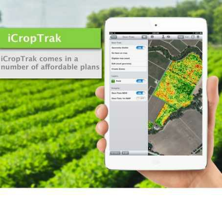

Mobile technology is rapidly changing the face of communication in the most remote areas of the world. Today, out of the seven billion people in the world, approximately six billion are cell
phone subscribers. In response, companies, governments, and NGOS alike have realized the potential of this tool in addressing today's most pressing global challenges.
Here are some key areas where mobile technology has had the greatest success:
Education
In education, mobile technology has helped provide schools, teachers, and parent’s access to meaningful data and tips to help students succeed.
It makes learning interesting and productive.

Surveys and Polling
New developments in surveying and polling on mobile devices has allowed international development workers to easily
collect data in rural communities and can escape from paper surveys. It has increased the efficiency.
Agriculture
Mobile technology has also been extremely transformative tool for rural agriculture.
Mobile phones have allowed farmers to gain access to market prices before traveling long distances to markets.
This technology also helps keep track of feed types, schedules, local veterinary contact information and precise market prices of cattle.
It also keep track of weather forecast.
Banking the Unbanked
According to a 2012 report by the World Bank, more than 2.5 billion are unbanked, without access to a bank account.
Mobile phones are quickly helping change this statistic.
Money can be transferred to merchants, people, or government agencies through a creditor's related phone number.
Health
In recent years, the growth of mobile health technologies, including health text messaging projects,
remote monitoring, portable sensors, and mobile phone apps, have changed the way healthcare is delivered globally.